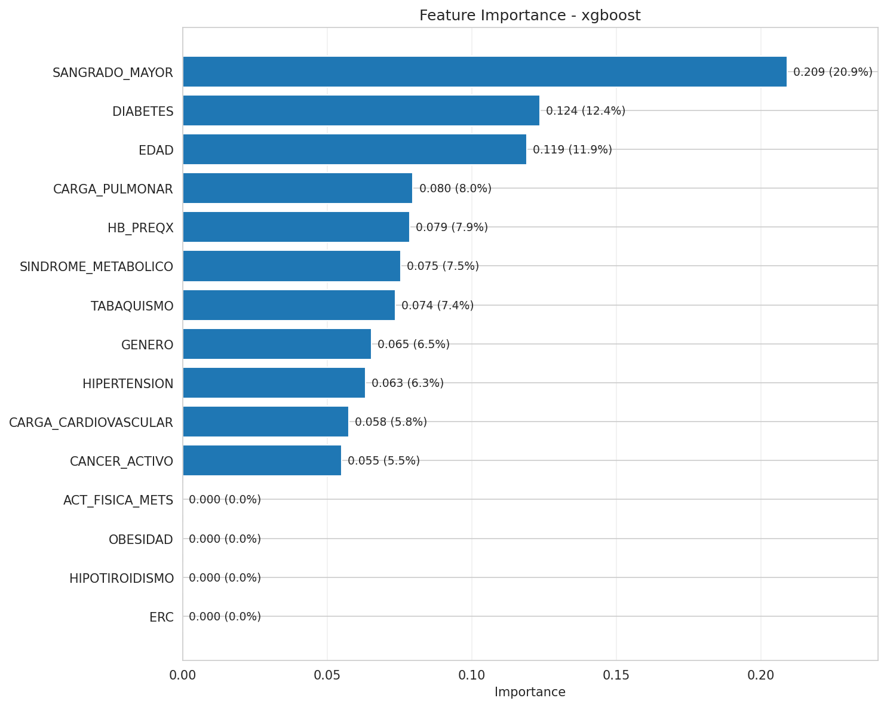

Fase · Fase 4
EXPERIMENTO 5 - DUELO FINAL
Optimizacion con busqueda de hiperparametros (Optuna): xgboost vs decision_tree
| Criterio | xgboost | decision_tree |
|---|---|---|
| AUC ROC | 0.6391 | 0.6227 |
| Recall | 0.8647 | 0.8329 |
| Specificity | 0.2854 | 0.3304 |
| F1 | 0.5118 | 0.5122 |
| Kappa | 0.1100 | 0.1227 |
ROC comparativa (Exp 5)

Feature importance del ganador (xgboost)

Decision manual de modelo ganador
XGBoost gana por AUC y recall (prioridad clinica de deteccion). Decision Tree queda como modelo interpretable por mejor especificidad/kappa relativa.
Graficas tomadas de exp_05_hyperparameter_search modelo comparacion_general y exp_05_hyperparameter_search modelo xgboost
12